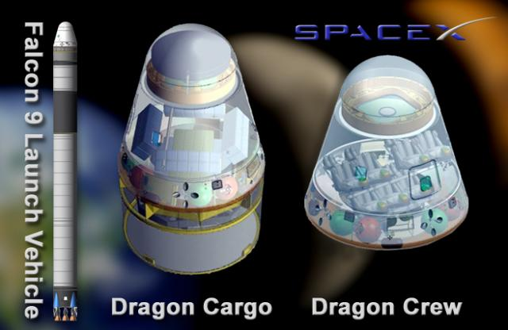

Just For Fun: The New Space Race
We are in the midst of a new space race. It isn't about proving national might, as the race to the moon was. No, this time it's just for fun.
Armadillo Aerospace's PixelLicense: GNU Free Documentation License, Armadillo Aerospace
Without government funding or involvement from established aerospace companies, a new space industry is evolving. Frustrated by the lack of public access to space, entrepreneurs who made big money during the software and Internet revolutions are ready for new, exciting and, above all, fun challenges – they've chosen space.
Tier One
The $10,000,000 Ansari X-Prize stimulated a renewed interest in suborbital spacecraft. It was Microsoft's cofounder, Paul Allen, who provided the financial backing for the X-Prize winning SpaceShipOne, built by Burt Rutan's Scaled Composites for Tier One.
Seeing the feasibility of a reusable suborbital spacecraft caused Richard Branson to form Virgin Galactic and offer tourist flights using SpaceShipTwo (SpaceShipOne's successor) to carry 6 paying passengers to the edge of space to experience weightlessness. Scheduled flights start in 2010 with over 200 fully paid deposits.
Armadillo Aerospace
The X-Prize also motivated John Carmack, cofounder of id Software – makers of the Doom and Quake computer games – to form Armadillo Aerospace with the aim to produce a manned suborbital spacecraft for space tourism flights.
Though they didn't complete a spacecraft in time for the X-Prize, they did enter the 2006 X-Prize Cup as the only competitor in the Lunar Lander prize challenge. Alas their rocket, called Pixel, didn't complete the challenge.
Blue Origin
Jeff Bezos, the Amazon.com founder, also has his eye on suborbital flights and formed Blue Origin to build New Shepard – a vertical takeoff and landing spacecraft. Their first prototype, called Goddard, launched, reached 285 ft, and (more importantly) landed successfully on November 13, 2006.
SpaceX
Elon Musk made his fortune by cofounding and selling both Zip2 and PayPal. With the proceeds he founded SpaceX (Space Exploration Technologies Corporation) with the aim to reduce the cost and improve the reliability of spacecraft. SpaceX's primary focus is on orbital launch vehicles using their Falcon 1-9 rockets. SpaceX also has plans to develop a manned capsule, called Dragon, to top their Falcon 9 rocket for low Earth orbit and resupply of the International Space Station.
SpaceX DragonCourtesy of NASA
The first launch of the Falcon 1 ended in failure after an engine caught fire. The second launch failed to achieve orbit as planned, but did reach about 300km.
The Power of Software
Software and Internet insiders, such as Allen, Carmack, Bezos and Musk, know firsthand the power of software to simulate real world processes. So it should come as no surprise that Computer-Aided Engineering (CAE) tools such as Computational Fluid Dynamics (CFD) are playing key roles in reducing costs and minimizing risks in this new space race. Let's hope that the spacecraft don't exhibit another well known software characteristic – bugs.
Feedback
Questions? Ideas? Problems?

Recent blog posts
- CFD Simulates Distant Past
- Background on the Caedium v6.0 Release
- Long-Necked Dinosaurs Succumb To CFD
- CFD Provides Insight Into Mystery Fossils
- Wind Turbine Design According to Insects
- Runners Discover Drafting
- Wind Tunnel and CFD Reveal Best Cycling Tuck
- Active Aerodynamics on the Lamborghini Huracán Performante
- Fluidic Logic
- Stonehenge Vortex Revealed as April Fools' Day Distortion Field
 Get our Blog feed
Get our Blog feed
Comments
SpaceShip Two Model Unveiled
Sir Richard Branson (president of Virgin Galactic) and Burt Rutan (founder of Scaled Composites) revealed scaled (no pun intended) models of SpaceShip Two and, its mothership, White Knight Two yesterday at the American Museum of Natural History. For full coverage see what the Associated Press had to say in Virgin Galactic Unveils Spaceship.
Google Lunar X-Prize
September 2007 saw another X-Prize launch called the Google Lunar X-Prize. Find out what Bob Cringley is proposing to win the prize in MicroISV Rising.
White Knight Two at 2009 AirVenture/Oshkosh
White Knight Two, the successor to White Knight One, flew into the 2009 AirVenture/Oshkosh airshow yesterday. Check out the details and pictures provided by Wired in "Eve Lands, Carrying Dreams Space 2.0."
SpaceShipTwo Airborne
Wired reports in "Photos: SpaceShipTwo Completes First Captive Flight" that SpaceShipTwo was airborne for the first time yesterday carried aloft by WhiteNightTwo. The extensive flight test program begins with captive flights of SpaceShipTwo, then unpowered glides, and finally rocket-powered flights to the edge of space. I'm sure the 330 edge-of-space tourists (deposits paid) are quite excited.